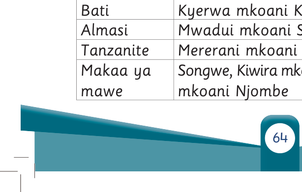

nyingine.
Viwanda viwekewe vifaa vya kupunguza moshi na kusafisha hewa yenye sumu na vumbi linalotoka viwandani.
Pia, viwanda viweke utaratibu wa urejelezaji taka ambazo huweza kutumiwa tena kwa matumizi mengine au kutumiwa kama malighafi.
Mfano, karatasi zilizotumika kama vile magazeti huweza kurudishwa kiwandani na kuchakatwa ili kupata karatasi tena.
Pia, karatasi huweza kubadilishwa kuwa nishati ya mkaa.
Taka zingine zinaweza kubadilishwa kuwa mbolea.
Aidha, vizuia sauti viwekwe viwandani ili kupunguza kelele za mashine.
Uchimbaji madini
Madini ni maliasili zinazopatikana ardhini.
Mifano ya madini yanayochimbwa hapa Tanzania ni dhahabu, almasi, Tanzanite, chuma, makaa ya mawe, shaba, chumvi, kokoto na mchanga.
Jedwali namba 2 linaonesha baadhi ya madini na mahali yanapopatikana nchini Tanzania.
Jedwali namba 2:
Baadhi ya madini na mahali yanapopatikana nchini Tanzania
| Aina ya Madini | Mahali yanapopatikana |
|---|---|
| Dhahabu | Geita, Kahama mkoani Shinyanga, Chunya mkoani Mbeya, Mpanda mkoani Katavi, Amani mkoani Tanga, Sekenke na Manyoni mkoani Singida |
| Bati | Kyerwa mkoani Kagera |
| Almasi | Mwadui mkoani Shinyanga |
| Tanzanite | Mererani mkoani Manyara |
| Makaa ya mawe | Songwe, Kiwira mkoani Mbeya na Mchuchuma mkoani Njombe |
